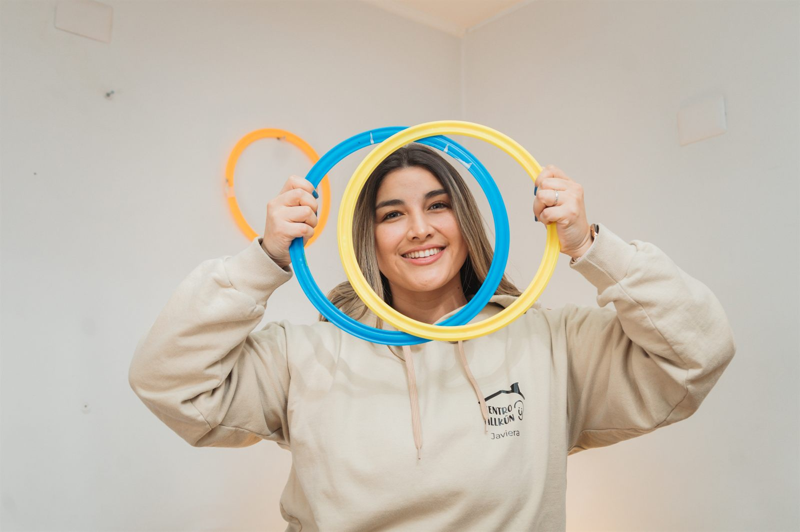
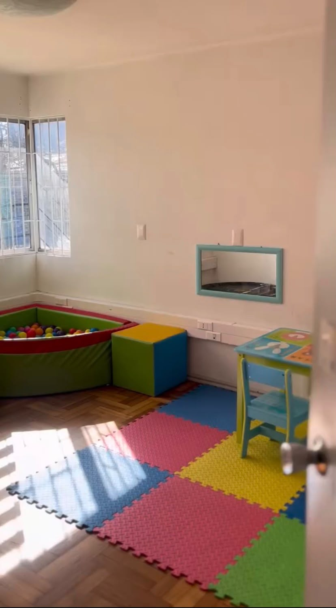
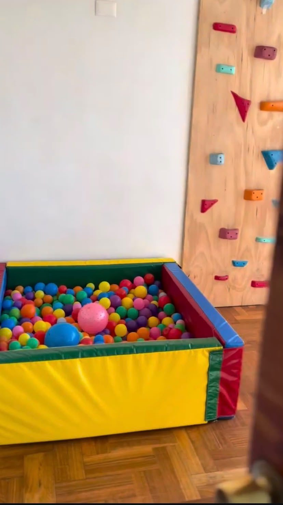

Fonoaudiología
Comunicación, lenguaje y habla.
Atención terapéutica · Concepción
Somos un equipo en Concepción que acompaña el desarrollo de niños, niñas y sus familias. Atendemos fonoaudiología, terapia ocupacional, educación diferencial, psicología, nutrición y kinesiología.


Terapias
Atención presencial para niños, niñas y sus familias, en un mismo centro.
Comunicación, lenguaje y habla.
Autonomía para el día a día.
Apoyo en el aprendizaje.
Acompañamiento emocional.
Alimentación y hábitos.
Movimiento y desarrollo.
 Cada niño y niña tiene su propio ritmo.
Cada niño y niña tiene su propio ritmo.
Cómo acompañamos
01
Atención presencial en Lientur 645 A.
02
Varias disciplinas, en un mismo centro.
03
Cada sesión cierra con un momento para conversar con la familia.
El espacio
El equipo y las salas donde ocurre la atención.



Concepción